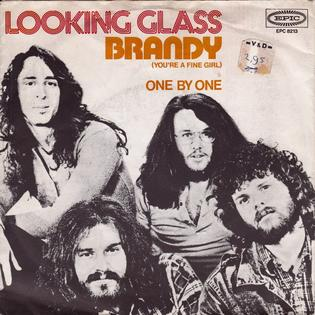

| Text1 | Text2 | Text3 |
|---|
|  |
There's a port on a western bay And it serves a hundred ships a day Lonely sailors pass the time away And talk about their homes And there's a girl in this harbor town And she works layin' whiskey down They say, Brandy, fetch another round She serves them whiskey and wine The sailors say, "Brandy, you're a fine girl" (you're a fine girl) "What a good wife you would be" (such a fine girl) "Yeah, your eyes could steal a sailor from the sea" Brandy wears a braided chain Made of finest silver from the North of Spain A locket that bears the name Of the man that Brandy loved He came on a summer's day Bringin' gifts from far away But he made it clear he couldn't stay No harbor was his home The sailors say, "Brandy, you're a fine girl" (you're a fine girl) "What a good wife you would be" (such a fine girl) "But my life, my lover, my lady is the sea" Yeah, Brandy used to watch his eyes When he told his sailor stories She could feel the ocean fall and rise She saw its ragin' glory But he had always told the truth, Lord, he was an honest man And Brandy does her best to understand At night when the bars close down Brandy walks through a silent town And loves a man who's not around She still can hear him say She hears him say, "Brandy, you're a fine girl" (you're a fine girl) "What a good wife you would be" (such a fine girl) "But my life, my lover, my lady is the sea" It is, yes it is He said, "Brandy, you're a fine girl" (you're a fine girl) "What a good wife you would be" (such a fine girl) "But my life, my lover, my lady is the sea" |
|---|---|
This week we learned alot about the power of CSS. CSS allows us to design and alter our website in any way we want. Change sizes, colors, dimensions, pretty much anything goes. Next we learned about adding interactive parts to our websites such as videos, mp3s, images, these types of things make the website more enjoyable for the people who visit it.